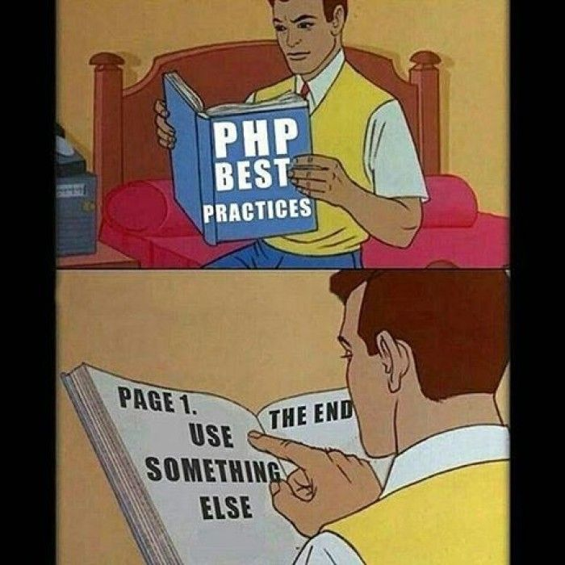
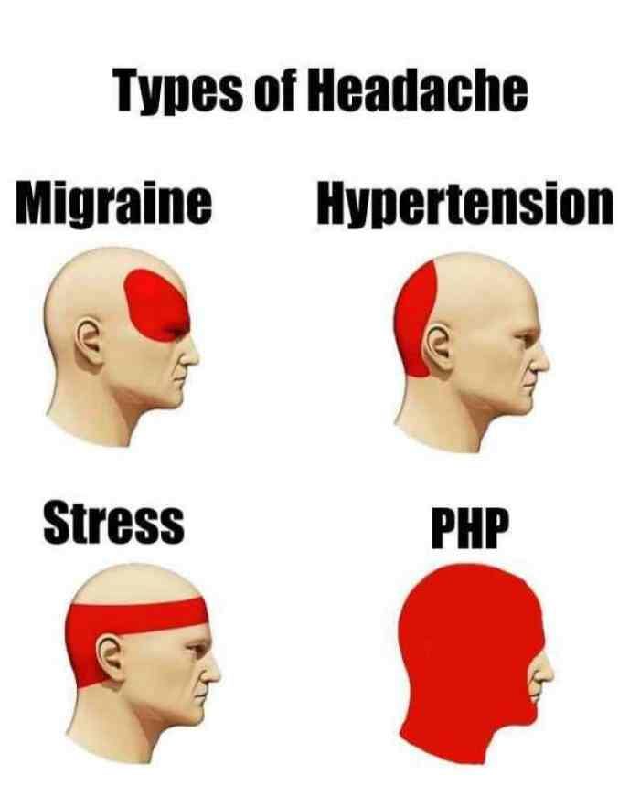

Porque não usar PHP
MOTIVOS ÓBVIOS
Não existe padrão nenhum em suas versões, ou seja
OS COMANDOS NÃO FUNCIONAM DA MESMA FORMA
SEUS PRÓPRIOS COMANDOS
Pontos Fortes
Pontos Fracos
- Falta de continuidade
- Falta de suporte a datas
- Documentação incompleta
- PHP tem menos ferramentas de depuração em comparação com outras linguagens de programação.
- É altamente difícil de gerenciar porque não é modular competente.


Seções:
Pontos Fortes
Pontos Fracos
Se não acredita em mim
Opinião de um especialista